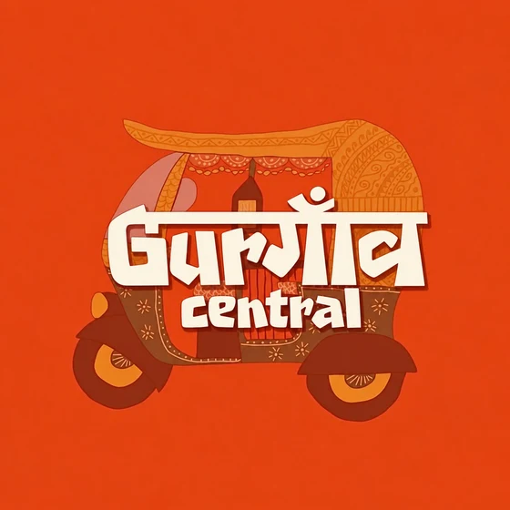
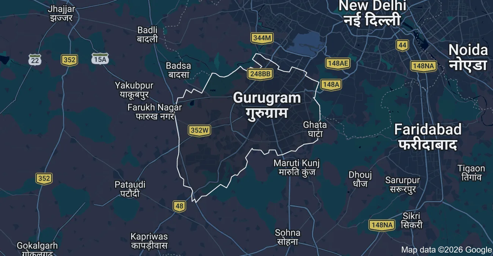
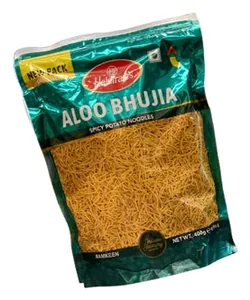
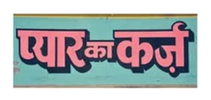
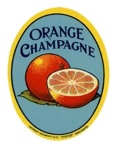
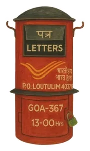
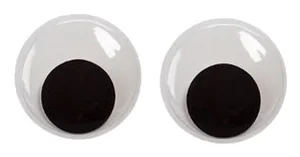
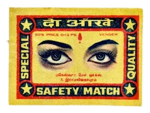

Blog
If the Show Is Over, Who's Still in the Audience?
Kingdom of Dreams was once alive with music and applause, but what remains after the show ends? An eerie silence, empty corridors, and the unsettling feeling that someone is still watching.

Malls and flea markets, campus lore and hidden stepwells, garba nights and pottery wheels. Your guide to the real Gurgaon.

Gurgaon is part glass towers, part old bazaar, with museums and pockets of green tucked in between, so it helps to see it laid out. Every pin here is a place from this guide. Zoom in, drag the map around and tap a pin to find out what to do there.

Drag to pan · pinch or Ctrl + scroll to zoom
Map data ©2026 Google. Pins are approximate, so use Open in Maps for the exact spot.
Longer reads from us, hosted on our own blogs.
Kingdom of Dreams was once alive with music and applause, but what remains after the show ends? An eerie silence, empty corridors, and the unsettling feeling that someone is still watching.

From ₹400 coffees to ₹40 momos Gurgaon taught me that it's never about the food, but the people you share it with

In a city full of people chasing something, the best you can find is someone who makes the chase feel a little less lonely.






Know a spot we missed? Drop the pin. Local knowledge wins.